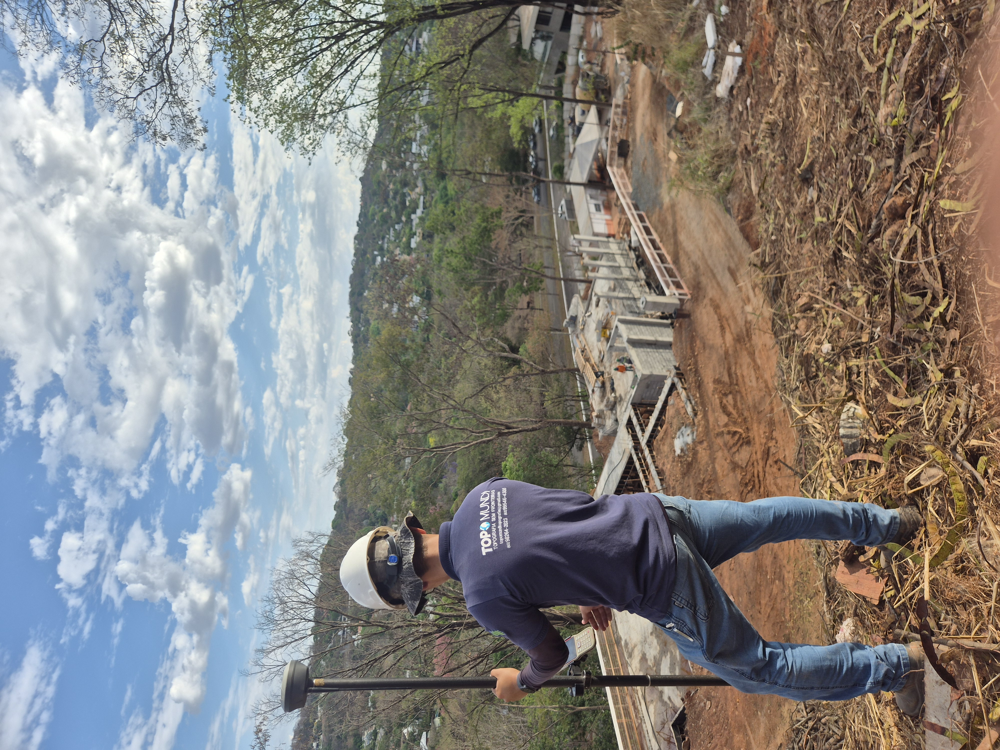
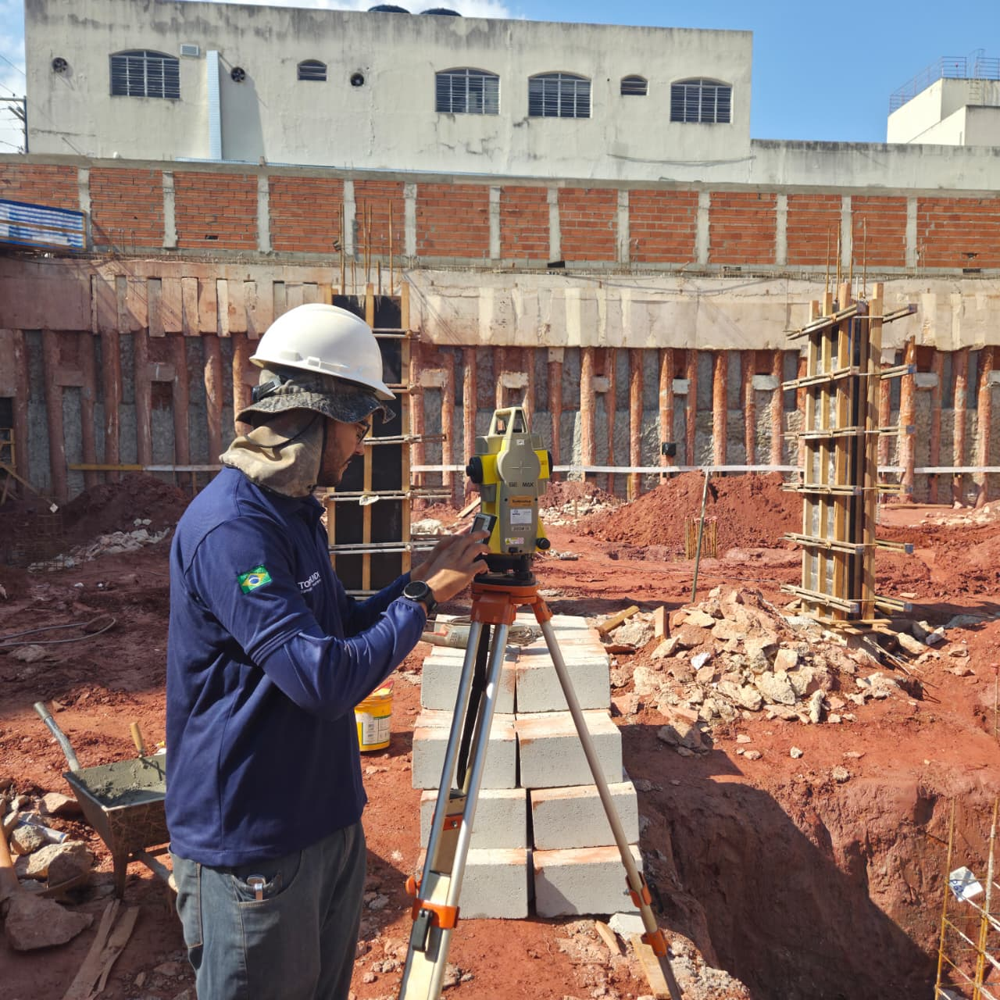
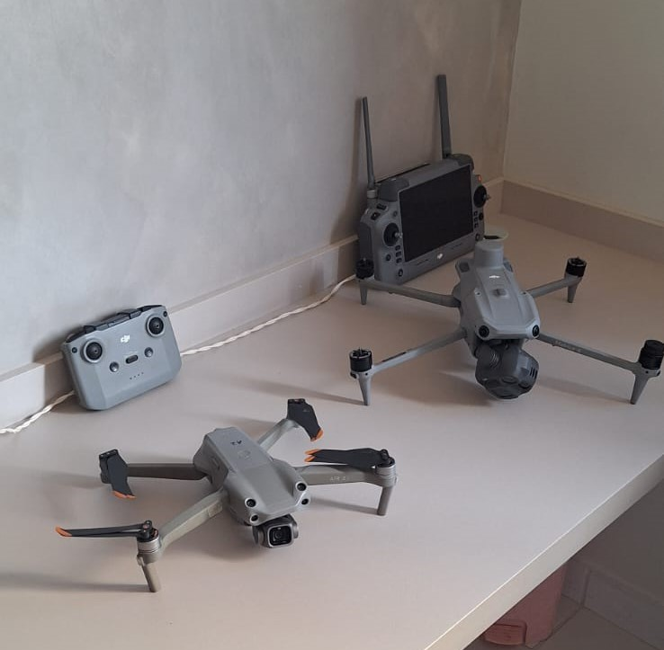

📐
Levantamento Planialtimétrico
Representação detalhada das características planimétricas e altimétricas do terreno para estudos, projetos e execução de obras.
Solicitar orçamento →Levantamentos topográficos, georreferenciamento, locação de obras e soluções técnicas com precisão, tecnologia e segurança.
Serviços técnicos para projetos urbanos, rurais, industriais e de infraestrutura, com foco em precisão, segurança e confiabilidade.
Representação detalhada das características planimétricas e altimétricas do terreno para estudos, projetos e execução de obras.
Solicitar orçamento →Levantamentos e documentação técnica para identificação, regularização e definição precisa de imóveis urbanos e rurais.
Solicitar orçamento →Implantação precisa em campo dos elementos definidos em projeto para obras civis, industriais e de infraestrutura.
Solicitar orçamento →Captura de imagens aéreas para ortofotos, modelos digitais, acompanhamento de obras e análise de grandes áreas.
Solicitar orçamento →Cadastro e representação de edificações, vias, redes, divisas e demais elementos existentes em campo.
Solicitar orçamento →Apoio técnico especializado em soluções topográficas e geotecnológicas conforme as necessidades de cada projeto.
Falar com a TOPOMUNDI →Ferramentas gratuitas para auxiliar profissionais, estudantes e clientes em cálculos e conversões topográficas.
Informe as coordenadas dos vértices sequencialmente.
Informe as cotas inicial e final e a distância horizontal entre os pontos.
Converta coordenadas entre UTM e Latitude/Longitude.
Fundada em 2022, a TOPOMUNDI TOPOGRAFIA LTDA atua na prestação de serviços topográficos e geotecnológicos voltados a projetos urbanos, rurais, de engenharia e infraestrutura.
A empresa desenvolve levantamentos topográficos, georreferenciamento, locação de obras, levantamentos cadastrais, aerolevantamentos e outras soluções técnicas aplicadas à medição e representação do território.
Para garantir confiabilidade e precisão nos resultados, a TOPOMUNDI utiliza equipamentos modernos e mantém seus instrumentos de medição com certificação de calibração.
Nossa atuação é pautada pela qualidade técnica, organização das informações e busca pela solução mais adequada às características e necessidades de cada projeto.
Levantamentos executados com atenção à qualidade dos dados e à confiabilidade das informações produzidas.
Utilização de GPS RTK, estação total GeoMax, drone e outros equipamentos aplicados aos serviços de campo.
Equipamentos de medição mantidos com certificação de calibração, contribuindo para a rastreabilidade e confiabilidade dos levantamentos.
Análise das características de cada demanda para definir métodos e recursos adequados à execução do serviço.
Alguns dos equipamentos utilizados pela TOPOMUNDI na execução dos serviços.

Posicionamento de alta precisão para levantamentos, locações e determinação de coordenadas em campo.

Equipamento utilizado para medições angulares e lineares de alta precisão em levantamentos e locações.

Apoio a aerolevantamentos, registros aéreos, acompanhamento de áreas e geração de produtos cartográficos.
Preencha as informações disponíveis. Com esses dados, a equipe da TOPOMUNDI poderá compreender melhor sua necessidade e dar continuidade ao atendimento pelo WhatsApp.
Selecione o tipo de serviço que você precisa.
Cidade, estado e dados básicos do imóvel ou empreendimento.
O sistema organiza as informações e abre uma conversa no WhatsApp.
Entre em contato com a TOPOMUNDI para solicitar informações, esclarecer dúvidas ou receber uma proposta para serviços de topografia e geotecnologia.
Envie as informações básicas do imóvel ou projeto. A equipe da TOPOMUNDI analisará a demanda e indicará o serviço mais adequado.